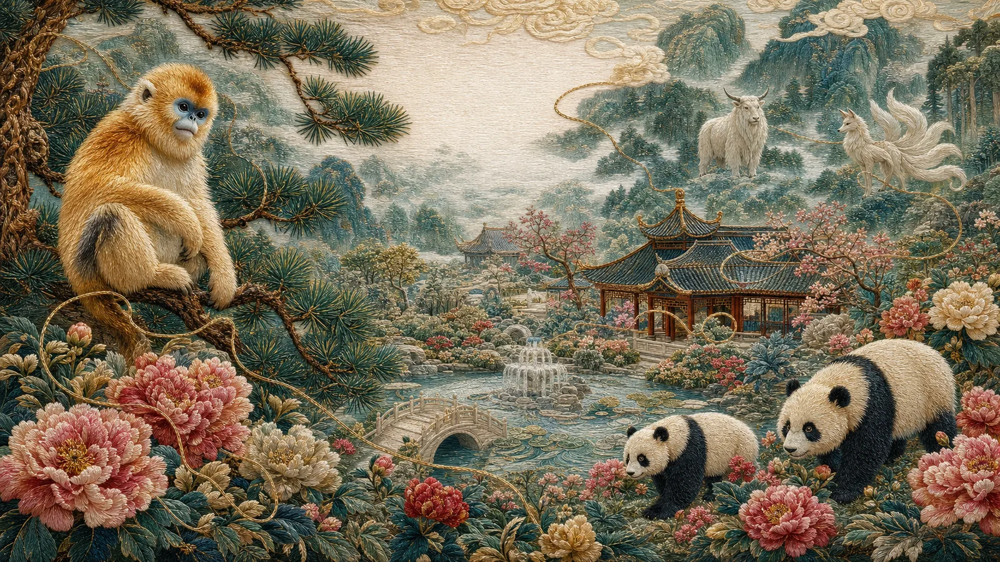

01
蜀绣灵境 / 花鸟园林
牡丹熊猫花园
熊猫、牡丹、紫藤和鸟群被组织成一座轻盈的绣线花园；它也是后续动态短片的静态起点。
EMBROIDERED WORLDS
以刺绣的温度、神话的轮廓，
编织自然与文化的视觉叙事。
从熊猫与金丝猴的花园出发，
遇见古老神话里的东方生灵。
这组作品从蜀绣的针脚出发，经过熊猫与金丝猴的自然叙事，再延伸到《山海经》的异兽想象。
让传统文化不只是被陈列，而是以更有温度、更具互动感的方式，进入今天的观看经验。
金丝猴与熊猫，在花木与丝线间相遇。
轻触一幅作品，近看针脚里的世界。
熊猫、牡丹、紫藤和鸟群被组织成一座轻盈的绣线花园；它也是后续动态短片的静态起点。
以瑞兽与自然植被的关系，补充灵境世界的守护主题。
雪意、春枝与瑞兽在绣线质感中相遇，以冷暖交织的画面延续灵境花园的四时叙事。
以雪竹、春意与安静的瑞兽姿态，呈现花园中更克制柔和的一面。
紫藤垂落在两位瑞兽之间，借由繁花与丝线的层叠，丰富花园世界的生命感。
牡丹、竹叶与如意云纹被拆解成可近看的针脚结构；缎面针与鎏金盘金线在同一幅绣面上交织。
金丝猴、熊猫、牡丹与竹影被安放在同一座幽静园林，作为瑞兽花园章节的群像收束。
金丝猴与熊猫第一次被置于同一座花园。松枝、牡丹、瑞鸟与山水沿着丝线展开，让一幅横构图成为完整的绣境。
白泽与九尾狐，以温柔的形象，
连接古老神话与当代的视觉想象。
横构图以幽林和萤光为场景，把白泽的智慧、守护与自然感收拢到一个有呼吸的神话瞬间。
以幽林、石刻与水面倒影塑造九尾狐的灵性；横构图让九尾的流动和空间层次更完整。

每一位生灵，都由同一根金线牵引，
回到东方叙事的温度之中。